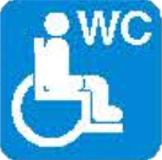
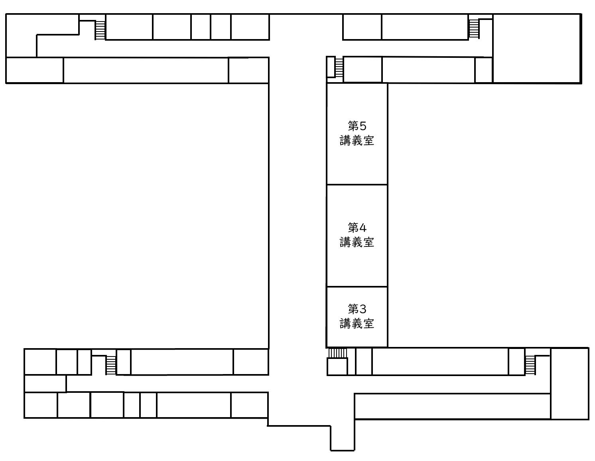
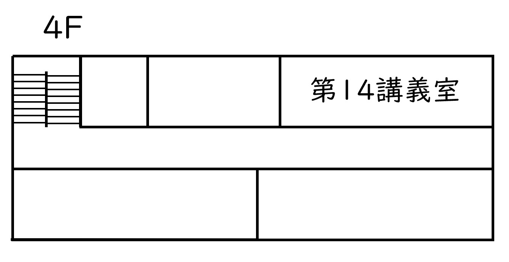
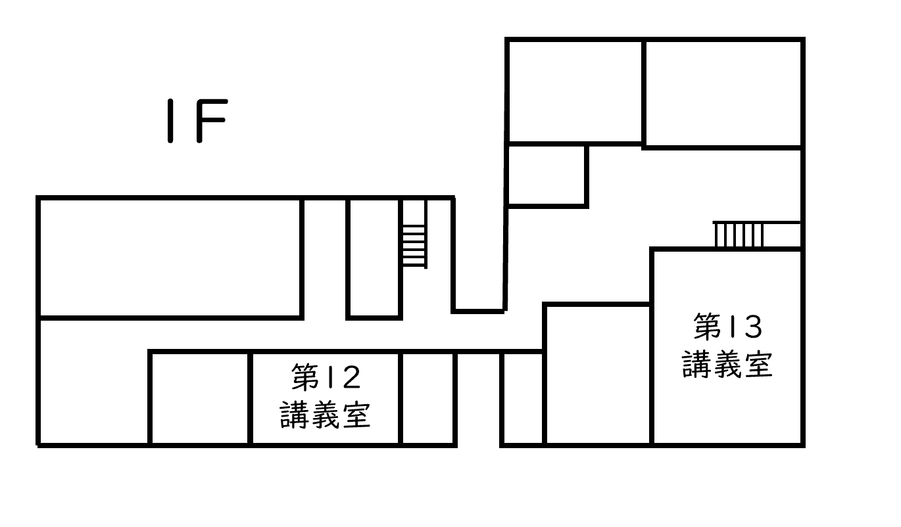
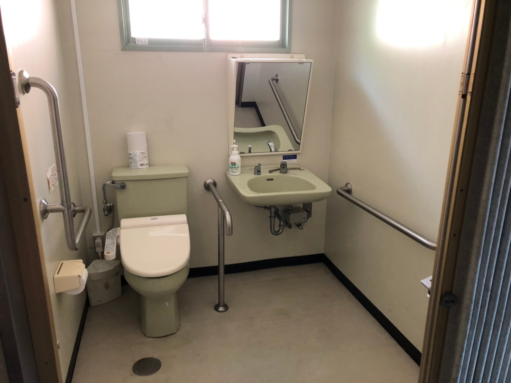

工学部
マップ上のアイコン(AEDを除く)をタップすると，その場所の写真をみることができます。
| アイコン | 説明 |
|---|---|
| AED | |
| エレベーター | |
|  | 多目的トイレ |
| スロープ自動扉 | |
| スロープ手動扉 |
- 工学部 1号館 1F
- 工学部 1号館 2F
- 工学部 1号館 3F
- 工学部 4号館 1F
- 工学部 4号館 2F
- 工学部 4号館 4F
- 工学部 5号館 1F
- 工学部 5号館 2F
- 工学部 6号館 1F
- 工学部 旧15号館
エリア
1号館 1F
エレベーター
多目的トイレ
1号館の南東入口(手動扉)
スロープの角度
| 上部 | 中部 | 下部 | 平均 |
|---|---|---|---|
| 9.4° | 9.4° | 9.7° | 9.5° |
1号館の南西入口(手動扉)
スロープの角度
| 上部 | 中部 | 下部 | 平均 |
|---|---|---|---|
| 5° | 4.8° | 4.6° | 4.8° |

1号館の北西入口(手動扉)
スロープの角度
| 上部 | 中部 | 下部 | 平均 |
|---|---|---|---|
| 6.1° | 6.3° | 5.8° | 6.1° | >
1号館の北側入口(手動扉)
スロープの角度
| 上部 | 中部 | 下部 | 平均 |
|---|---|---|---|
| 4.8° | 4.8° | 4.5° | 4.7° |
1号館の北側入口(自動扉)
スロープの角度
| 上部 | 中部 | 下部 | 平均 |
|---|---|---|---|
| 3.3° | 3.3° | 2.1° | 2.9° |
1号館 2F

1号館 3F
4号館 1F
エレベーター
多目的トイレ
4号館の南入口(手動扉)
スロープの角度
| 上部 | 中部 | 下部 | 平均 |
|---|---|---|---|
| 6.2° | 7° | 6.8° | 6.7° |
4号館の北入口(手動扉)
スロープの角度
| 上部 | 中部 | 下部 | 平均 |
|---|---|---|---|
| 6.2° | 5.7° | 5.7° | 5.9° |
4号館 2F

4号館 4F

5号館 1F
エレベーター
多目的トイレ
5号館の第15講義室入口(手動扉)
スロープの角度
| 上部 | 中部 | 下部 | 平均 |
|---|---|---|---|
| 4.5° | 4.5° | 4.5° | 4.5° |
5号館の北西側入口(自動扉)
スロープの角度
| 上部 | 中部 | 下部 | 平均 |
|---|---|---|---|
| 4.9° | 3.5° | 4.6° | 4.3° |
5号館 2F

6号館 1F

エレベーター
多目的トイレ
6号館北側入口(手動扉)
スロープの角度
| 上部 | 中部 | 下部 | 平均 |
|---|---|---|---|
| 5.6° | 5.7° | 5.5° | 5.9° |
6号館の西側入口(手動扉)
旧15号館
多目的トイレ
旧15号館北側入口(手動扉)
スロープの角度
| 上部 | 中部 | 下部 | 平均 |
|---|---|---|---|
| 6° | 6.2° | 6.6° | 6.3° |